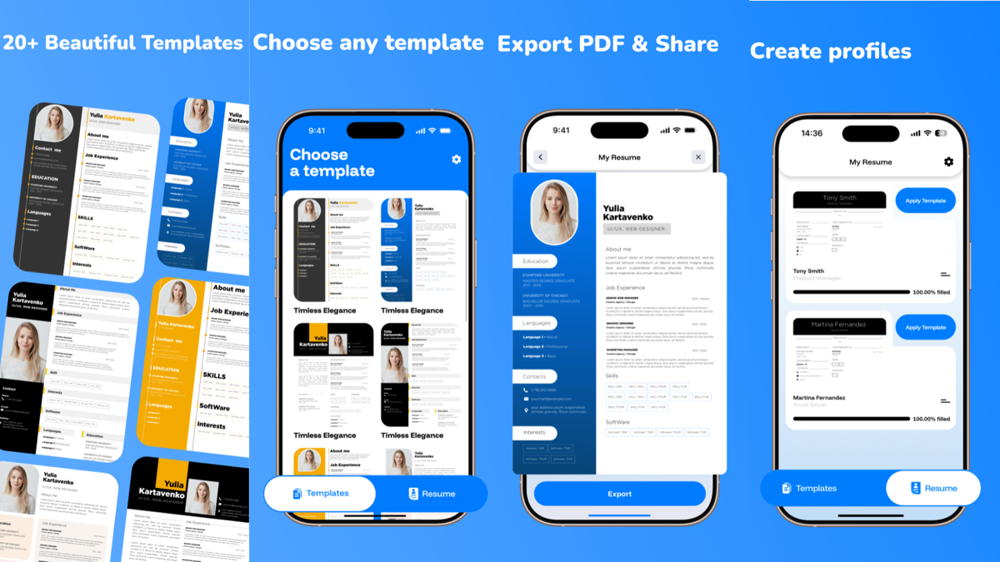

Why Your Resume Isn't Getting Past ATS Filters
Learn why 75% of resumes are rejected before human eyes see them, and what you can do about it.
Read article →Create resumes that get past ATS filters and land you interviews. 20+ professional templates, step-by-step guidance, and one-tap export.

Choose from classic, modern, creative, and minimalist designs. Templates optimized for every industry and career stage.
No more blank page anxiety. We guide you through every section with smart prompts and helpful examples.
Your resume, your style. Adjust fonts, colors, spacing, and layout to match your personal brand while staying ATS-compatible.
Export to PDF, JPG, or PNG with one tap. Every format is optimized for ATS compatibility and visual appearance.
Import your existing CV and update it in minutes. Generate matching cover letters that complement your resume.
Starting your career? Build your first professional resume with templates designed for entry-level candidates. Highlight your education, projects, and skills.
Switching industries? Frame your experience to fit your new field. Our templates help you show transferable skills that matter to your target role.
Need to apply quickly? Update your resume in minutes with our guided builder. Apply to multiple jobs while the iron is hot.
Building a portfolio-style CV? Showcase your projects and clients with our creative templates designed to demonstrate your work.
Applying for jobs in a new country? We offer templates formatted for local standards (US, EU, UK, and more).
Haven't updated your resume in years? Import your old CV and refresh it with modern templates and current information.
| Feature | CV Builder | Canva | Indeed Resume | Professional Writer |
|---|---|---|---|---|
| Cost | Free first resume | $13/mo | Free | $100-500+ |
| ATS Optimization | Yes, designed for it | No | Yes | Yes |
| Templates | 20+ professional | 100+ (not ATS-safe) | 8 basic | Custom |
| Cover Letters | Yes, included | No | No | Yes |
| Step-by-Step Guidance | Yes | No | Yes | Yes |
| Speed (minutes) | 5-10 | 20-30 | 10-15 | 24-48 hours |
| Customization | Full | Full | Limited | Full |
Pick from 20+ professionally designed templates optimized for ATS compatibility and visual appeal.
Follow step-by-step guidance to add your experience, education, skills, and achievements. No blank page paralysis.
Download as PDF, JPG, or PNG and start applying. Your resume is ready for both ATS systems and human eyes.
CV Builder is available on iOS. Build your first resume free, no credit card required.
Download on App StoreLearn why 75% of resumes are rejected before human eyes see them, and what you can do about it.
Read article →Explore modern resume formats that work with ATS systems while looking professional and clean.
Read article →When should you include a cover letter, and when is it optional? Find out what employers actually read.
Read article →